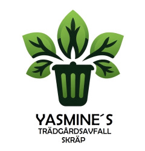

Yasmine’s Trädgårdsavfall och Skräp
Personlig service.
Pålitligt utförande.
Yasmine’s Trädgårdsavfall och Skräp utgår från Helsingborg och hjälper kunder i hela Skåne. Vi erbjuder trädfällning, slyröjning, tömning och bortforsling, och tar även större uppdrag i andra delar av Sverige.

Så vill vi arbeta
Snabb kontakt.
Ett arbete som blir gjort.
Vi återkopplar snabbt, planerar tiderna tillsammans med kunden och håller det vi har lovat. Ett trevligt bemötande och hänsyn till människorna runt arbetsplatsen är en del av arbetet.
Personlig kontakt
Vad ska bort? Hur mycket är det? Hur ser vägen ut? Rätt underlag gör det lättare att bedöma arbetet.
Tydlig överenskommelse
Offerten beskriver det vi kommer överens om. Tid och praktiska förutsättningar stäms av före arbetet.
Omsorg om arbetet
Trädfällning, röjning, tömning och bortforsling enligt överenskommelse, med hänsyn till kunden och omgivningen.
Vårt arbetsområde
Hela Skåne.
Större uppdrag i Sverige.
Vi utgår från Helsingborg och arbetar i hela Skåne. Vid större uppdrag tar vi oss även till andra delar av Sverige.
- Helsingborg
- Malmö
- Lund
- Ängelholm
- Kristianstad
- Ystad
Beskriv platsen och omfattningen, så tar vi fram ett upplägg för ditt uppdrag.
Beskriv platsen för ditt uppdragFöretagsuppgifter
Företagsuppgifter
& underlag.
- Företag
- Yasmine’s Trädgårdsavfall och Skräp
- F-skatt
- Företaget har F-skatt.
- Avfallstransport
- Vi har tillstånd från Länsstyrelsen för yrkesmässig transport av icke-farligt avfall, giltigt till 2029.
- Omfattning
- Ingen hantering av farligt avfall eller bygg- och rivningsavfall. Ingen städning.
Behöver du företags- eller tillståndsunderlag inför en beställning? Kontakta oss så hjälper vi dig.
Begär företagsunderlag via SMSFrågor & svar
Svar inför
ditt uppdrag.
Hittar du inte ditt svar? Ring eller skicka ett SMS till 076-852 85 12.
Alla kontaktvägarHur får jag en offert?
Skicka bilder, ort och en beskrivning av vad som ska bort. Ange ungefärlig mängd och hur platsen nås. Du kan förbereda en förfrågan här och sedan själv skicka den i din SMS-app.
Vad kostar det?
Priset beror på uppdragets omfattning, mängd och förutsättningar. Vi lämnar offert efter underlag. För större arbeten finns möjlighet till kostnadsfri besiktning. Inget arbete bokas genom webbformuläret.
Måste jag bära ut sakerna själv?
Vi hjälper till med bärning enligt offerten. Berätta var sakerna finns, om det finns trappor eller hiss och hur lång bärvägen är så att det kan ingå i bedömningen.
Städar ni utrymmet efter tömningen?
Nej. Vi utför bärning, sortering och bortforsling enligt överenskommen offert, inte städning, flyttstädning eller sanering. Eventuell städning behöver ordnas separat.
Vilket avfall tar ni inte emot?
Vi hanterar inte farligt avfall eller bygg- och rivningsavfall. Exempel är kemikalier, färg, oljor, asbest och tryckimpregnerat trä. Beskriv materialet om du är osäker, innan hämtning bokas.
Kan ni fälla träd?
Vi hjälper till med trädfällning, kapning och bortforsling efter bedömning av trädets läge och omgivning. Vi erbjuder också slyröjning och röjning av större markområden. Skicka bilder som visar hela trädet och omgivningen, och ange ungefärlig höjd. Vi erbjuder inte avancerad riskfällning av stora träd, klättrande arboristarbete eller stubbfräsning. Läs om trädfällning och slyröjning.
Tar ni uppdrag åt verksamheter och kommunala beställare?
Ni är välkomna att beskriva ett uppdrag för bedömning och offert. På sidan Kommuner & fastigheter finns stöd för underlaget. Särskilda beställningskrav och villkor behöver stämmas av innan ett uppdrag bokas.
Har ni tillstånd för avfallstransport?
Vi har tillstånd från Länsstyrelsen för yrkesmässig transport av icke-farligt avfall, giltigt till 2029, och har F-skatt. Fråga efter underlaget om du behöver det inför en beställning.
Kan jag bifoga bilder i webbformuläret?
Nej. Formuläret sammanställer texten lokalt. Du bifogar själv bilder när du skickar meddelandet i din SMS-app. Inga bilder laddas upp från webbplatsen.
Skickas förfrågan automatiskt när jag fyllt i den?
Nej. Först granskar du sammanställningen. Sedan öppnar du ett SMS till 076-852 85 12 eller kopierar texten. Du skickar själv. Webbplatsen visar därför aldrig att en offertförfrågan har levererats.
Vi börjar med en fråga
Beskriv uppdraget.
Vi tar det vidare.
En liten hämtning eller ett större uppdrag — beskriv vad du behöver.